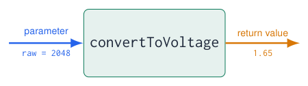
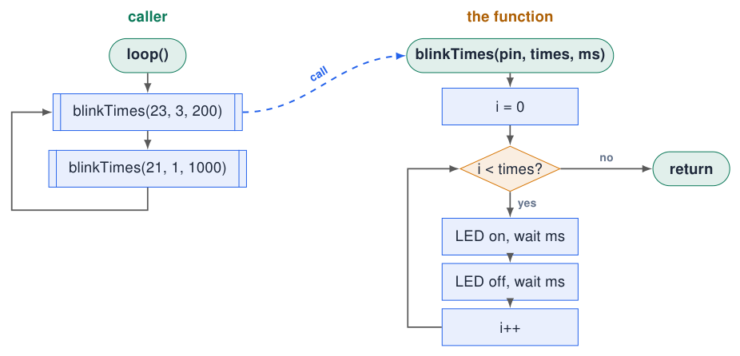
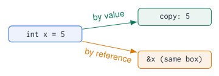
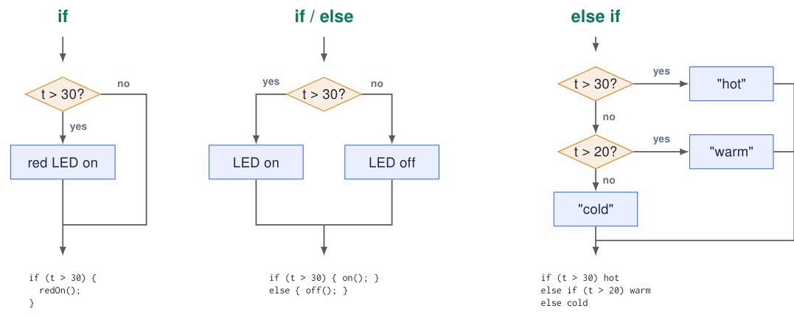
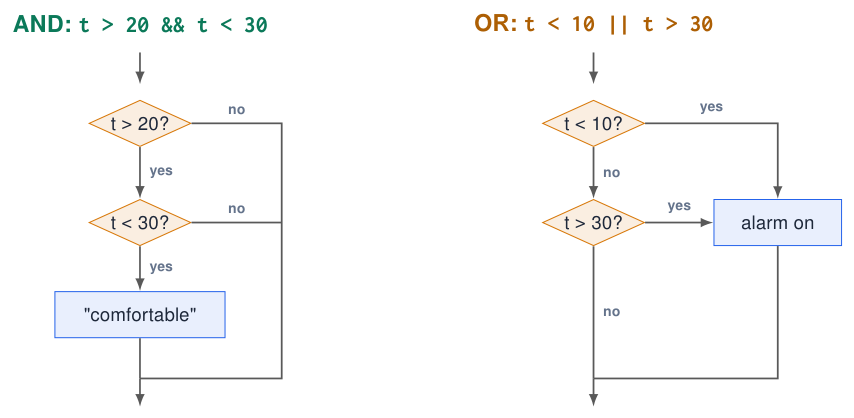
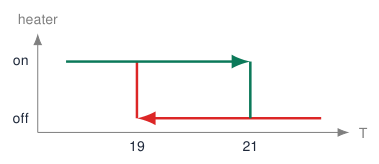
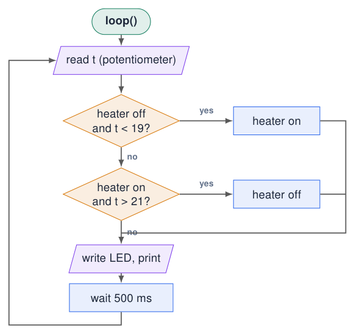

Functions and Decisions¶
Functions: give a name to a job¶
-
A function is a block of code with a name that you can call whenever you need it.
-
You already use many:
pinMode(),digitalWrite(),Serial.println(),setup(),loop(). -
It can take parameters (input) and return a value (output), or neither.
-
Benefits: less repetition, readable code, test one piece at a time, reuse in the next project.

name(parameters) {
// code
}
Sources: Embedded Programming, lectures 1–6
Functions without parameters and return value¶
const int LEDS[] = {23, 22, 21, 4};
void turnOnAllLeds() {
digitalWrite(23, HIGH);
digitalWrite(22, HIGH);
digitalWrite(21, HIGH);
digitalWrite(4, HIGH);
}
void turnOffAllLeds() {
digitalWrite(23, LOW);
digitalWrite(22, LOW);
digitalWrite(21, LOW);
digitalWrite(4, LOW);
}
void setup() {
for (int pin : LEDS) pinMode(pin, OUTPUT);
}
void loop() {
turnOnAllLeds();
delay(500);
turnOffAllLeds();
delay(500);
}
-
void: returns nothing. -
Empty
(): takes no parameters. -
The definition (with the body) can be anywhere in the
.inofile. -
The call
turnOnAllLeds();runs the body, then continues on the next line. -
loop()now reads like the flowchart: on, wait, off, wait.
Naming
Functions do something: use a verb: readHumidity(), setColor(), isPressed().
Sources: Example from lecture 2 Embedded Programming, lectures 1–6
Parameters: functions with input¶
void blinkTimes(int pin, int times, int ms) {
for (int i = 0; i < times; i++) {
digitalWrite(pin, HIGH);
delay(ms);
digitalWrite(pin, LOW);
delay(ms);
}
}
void setup() {
pinMode(23, OUTPUT);
pinMode(21, OUTPUT);
}
void loop() {
blinkTimes(23, 3, 200); // blue: 3 fast blinks
blinkTimes(21, 1, 1000); // red: 1 slow blink
}
-
Parameters are local variables that receive a copy of the values in the call.
-
The order and type must match: pin, times, ms.
-
One function, many behaviours: that is reuse.
Pass by value
Changing times inside the function does not change the variable of the caller: the function works on a copy.
Flowchart: calling a function¶
Try simulation: Arduino to flowchart

-
The box with double side lines is a function call (“predefined process”).
-
The function has its own flowchart: it starts with its name and ends with return.
-
After return the caller continues with the next box.
-
Two calls with different parameters, one flowchart for the function.
Return values: functions with output¶
const int POT_PIN = 36;
float convertToVoltage(int adcValue) {
return adcValue * 3.3 / 4095.0; // 12-bit ADC
}
bool isAbove(float value, float limit) {
return value > limit;
}
void setup() { Serial.begin(115200); }
void loop() {
int raw = analogRead(POT_PIN);
float voltage = convertToVoltage(raw);
Serial.printf("raw=%d V=%.2f\n", raw, voltage);
if (isAbove(voltage, 2.0)) {
Serial.println("Above 2 V!");
}
delay(500);
}
-
The return type before the name says what comes back:
float,bool,int… -
returnends the function immediately and hands back the value. -
The call can be used like a value: in an assignment, a print, a condition.
From an Uno example?
* 5.0 / 1023.0 is for a 10-bit, 5 V Uno. ESP32: * 3.3 / 4095.0.
Sources: Adapted from lecture 2 Embedded Programming, lectures 1–6
Kinds of functions: input and output¶
Info
Inputs = parameters of any type (int, float, bool, char, String, arrays, references). Output = exactly one return value or void; more results via reference parameters.
Example: geometric figures¶
// PI is already defined by Arduino.h
float circleArea(float r) { return PI * r * r; }
float circleCircumference(float r) { return 2 * PI * r; }
float rectangleArea(float w, float h) { return w * h; }
float triangleArea(float b, float h) { return 0.5 * b * h; }
float cylinderVolume(float r, float h) {
return circleArea(r) * h; // a function using a function
}
void setup() {
Serial.begin(115200);
Serial.printf("circle r=2: %.2f\n", circleArea(2));
Serial.printf("circumference: %.2f\n", circleCircumference(2));
Serial.printf("rectangle 3 x 4: %.2f\n", rectangleArea(3, 4));
Serial.printf("triangle 6, 2: %.2f\n", triangleArea(6, 2));
Serial.printf("cylinder r=1 h=5: %.2f\n", cylinderVolume(1, 5));
float total = circleArea(1) + rectangleArea(2, 3); // in an expression
Serial.printf("total area: %.2f\n", total);
}
void loop() {}
-
Each function has one job and a name that says it.
-
Different numbers of parameters: 1 (
r) or 2 (w,h). -
A call is a value: use it in a print, an assignment or an expression.
-
Functions can call other functions:
cylinderVolume()reusescircleArea().
Test like a mathematician
Check each function with values you can compute by hand: \(r = 1 \Rightarrow \pi\).
Overloading and default parameters¶
// same name, different parameter lists: overloading
float area(float r) { return PI * r * r; } // circle
float area(float w, float h) { return w * h; } // rectangle
float area(float a, float b, float c) { // triangle (Heron)
float s = (a + b + c) / 2;
return sqrt(s * (s - a) * (s - b) * (s - c));
}
// default values: the caller may leave the last parameters out
void blink(int pin, int times = 1, int ms = 200) {
for (int i = 0; i < times; i++) {
digitalWrite(pin, HIGH); delay(ms); digitalWrite(pin, LOW); delay(ms);
}
}
void setup() {
Serial.begin(115200);
pinMode(23, OUTPUT);
Serial.println(area(1.0)); // circle: 3.14
Serial.println(area(2.0, 3.0)); // rectangle: 6.00
Serial.println(area(3.0, 4.0, 5.0)); // triangle: 6.00
blink(23); blink(23, 3); blink(23, 3, 50);
}
void loop() {}
-
Overloading: one name, several versions. The compiler picks the version by the number and types of the arguments.
-
Default parameters: values used when the caller leaves them out; they must be the last parameters.
Ambiguous calls
area(2, 3) with int arguments still works (converted to float), but two overloads that fit equally well give a compile error.
Example: average grade of a group of students¶
float average(const float g[], int n) { // array in, float out
float sum = 0;
for (int i = 0; i < n; i++) sum += g[i];
return sum / n;
}
bool passed(float grade) { return grade >= 5.5; } // float in, bool out
char letter(float grade) { // float in, char out
if (grade >= 8.0) return 'A';
if (grade >= 7.0) return 'B';
return grade >= 5.5 ? 'C' : 'F';
}
String verdict(float grade) { return passed(grade) ? "pass" : "fail"; }
void setup() {
Serial.begin(115200);
float grades[] = {7.5, 5.0, 8.2, 6.4, 9.1};
int n = sizeof(grades) / sizeof(grades[0]);
for (int i = 0; i < n; i++)
Serial.printf("student %d: %.1f %c %s\n", i + 1, grades[i],
letter(grades[i]), verdict(grades[i]).c_str());
Serial.printf("group average: %.2f\n", average(grades, n));
}
void loop() {}
-
Four functions, four return types:
float,bool,char,String. -
An array parameter needs its length as a second parameter: the function cannot know it.
-
const: the function promises not to change the grades. -
.c_str()turns aStringinto text forprintf.
Dutch grades
Scale 1–10, pass from 5.5. The letters are only an example of a char result.
More than one result: reference parameters¶
// & = reference: the function works on the caller's variable
void rectangle(float w, float h, float &area, float &perimeter) {
area = w * h;
perimeter = 2 * (w + h);
}
void minMax(const float v[], int n, float &lo, float &hi) {
lo = hi = v[0];
for (int i = 1; i < n; i++) {
if (v[i] < lo) lo = v[i];
if (v[i] > hi) hi = v[i];
}
}
void setup() {
Serial.begin(115200);
float a, p;
rectangle(3, 4, a, p); // a = 12, p = 14
Serial.printf("area %.1f, perimeter %.1f\n", a, p);
float grades[] = {7.5, 5.0, 8.2, 6.4, 9.1};
float lowest, highest;
minMax(grades, 5, lowest, highest);
Serial.printf("lowest %.1f, highest %.1f\n", lowest, highest);
}
void loop() {}

-
By value (default): the function gets a copy; changes stay inside.
-
By reference (
&): the function works on the caller’s variable: a way to return several results. -
Arrays are always passed as an address: use
constif the function must not change them.
Functions in embedded code: sensors and actuators¶
const int LEDS[] = {23, 22, 21, 4};
int readPotPercent() { return map(analogRead(36), 0, 4095, 0, 100); }
bool isPressed(int pin) { return digitalRead(pin) == HIGH; } // course board
void alarm(bool on) { digitalWrite(2, on); }
void showLevel(int percent) { // 0..100 % -> 0..4 LEDs
for (int i = 0; i < 4; i++) digitalWrite(LEDS[i], percent > i * 25);
}
void setup() {
for (int i = 0; i < 4; i++) pinMode(LEDS[i], OUTPUT);
pinMode(2, OUTPUT);
pinMode(34, INPUT);
}
void loop() {
int level = readPotPercent();
showLevel(level);
alarm(level > 90 || isPressed(34));
delay(50);
}
-
loop()now reads like a sentence: read the level, show it, alarm if too high or pressed. -
Hardware details (pins, ranges, active HIGH/LOW) are hidden inside the functions.
-
Change the sensor or the board? Only one function changes.
-
Each function can be tested on its own with Serial prints.
Quiz: which signature?¶
-
A function that converts Celsius to Fahrenheit.
Check your answer
float celsiusToFahrenheit(float c)(returnsc * 9 / 5 + 32) -
A function that tells whether a number is even.
Check your answer
bool isEven(int n)(returnsn % 2 == 0) -
A function that prints a separator line of dashes.
Check your answer
void printLine()orvoid printLine(int length) -
A function that computes both the average and the maximum of an array of
int.Check your answer
void stats(const int v[], int n, float &avg, int &mx) -
Why does
float average(float g[])not know how many grades there are?Check your answer
An array parameter is only an address; pass the length as an extra parameter.
Scope of parameters and where to define functions¶
void addTen(int x) {
x = x + 10; // changes the copy
Serial.println(x); // 15
}
int plusTen(int x) {
return x + 10; // returns a new value
}
void setup() {
Serial.begin(115200);
int n = 5;
addTen(n);
Serial.println(n); // still 5
n = plusTen(n);
Serial.println(n); // 15
}
void loop() {}
-
To change a value of the caller, return the new value and assign it.
-
The Arduino IDE adds function prototypes automatically, so in a
.inofile the order of functions does not matter. -
In plain
.cppfiles you must declare a function before using it:
int plusTen(int x);
Good functions
Short (fits on the screen), does one thing, has a name that says what.
if: making decisions¶
// if: do something only when true
if (temperature > 30) {
digitalWrite(LED_RED, HIGH);
}
// if / else: choose between two
if (temperature > 30) {
digitalWrite(LED_RED, HIGH);
} else {
digitalWrite(LED_RED, LOW);
}
// else if: choose between many
if (temperature > 30) {
Serial.println("hot");
} else if (temperature > 20) {
Serial.println("warm");
} else {
Serial.println("cold");
}
-
The condition in
( )istrueorfalse. -
Only the block of the first true condition runs; the rest is skipped.
-
elsecatches everything that was not true before. -
Order matters: test the most specific case first.
Flowchart link
Every if is a decision diamond; else if is a second diamond on the “no” exit.
Sources: Examples from lecture 2 Embedded Programming, lectures 1–6
Flowcharts: if, if / else and else if¶
Try simulation: Arduino to flowchart

Every if is one decision diamond; else if is a new diamond on the no exit; all paths meet again below.
Ternary operator: choose between two values¶
const int LED_PIN = 21;
void setup() {
Serial.begin(115200);
pinMode(LED_PIN, OUTPUT);
int temperature = 32;
// Choose a value with if / else:
int ledState;
if (temperature > 30) {
ledState = HIGH;
} else {
ledState = LOW;
}
// The same choice with the ternary operator:
ledState = (temperature > 30) ? HIGH : LOW;
digitalWrite(LED_PIN, ledState);
Serial.println(temperature > 30 ? "hot" : "OK");
}
void loop() {}
Conditional operator (ternary)
condition ? a : b
-
Ternary means three operands: one condition and two alternatives.
-
true: choosea(after?).false: chooseb(after:). -
Only the selected alternative is evaluated.
-
Produces a value: assign it, return it, or pass it to a function.
-
Try 32:
HIGH, printshot. Try 25:LOW, printsOK.
Keep it readable
Prefer if/else for complex choices. Avoid nested ternaries.
Comparison and logical operators¶
| Op. | Meaning | Example (x = 5) |
|---|---|---|
== |
equal to | x == 5 \(\rightarrow\) true |
!= |
not equal | x != 5 \(\rightarrow\) false |
> < |
greater / less | x > 3 \(\rightarrow\) true |
>= <= |
or equal | x <= 4 \(\rightarrow\) false |
! |
not | !(x > 3) \(\rightarrow\) false |
&& |
and | x > 0 && x < 10 \(\rightarrow\) true |
|| |
or | x < 0 || x > 10 \(\rightarrow\) false |
| A | B | A && B |
A || B |
|---|---|---|---|
| F | F | F | F |
| F | T | F | T |
| T | F | F | T |
| T | T | T | T |
= is not ==
if (x = 0) assigns 0 to x and is always false. The compiler only warns. Write if (x == 0).
Sources: Embedded Programming, lectures 1–6
Combining conditions¶
// inside a range: AND
if (temperature > 20 && temperature < 30) {
Serial.println("comfortable");
}
// outside a range: OR
if (temperature < 10 || temperature > 30) {
digitalWrite(LED_RED, HIGH); // alarm
}
// buttons: both, either, exactly one
bool k1 = digitalRead(34);
bool k2 = digitalRead(35);
if (k1 && k2) Serial.println("both");
if (k1 || k2) Serial.println("at least one");
if (k1 != k2) Serial.println("exactly one");
if (!k1) Serial.println("KEY1 released");
-
&&: all parts must be true. -
||: at least one part true. -
!=between twobools is an exclusive or. -
Use brackets when mixing:
(a && b) || c.
A classic bug
if (t > 20 || t < 30) is always true: every number is above 20 or below 30.
Flowchart: combining conditions with && and ||¶

-
AND (
&&): two decisions in a row; every no skips the action. -
OR (
||): two ways to reach the action; one yes is enough. -
The second question is skipped when the first already decides (“short-circuit evaluation”).
Example: a thermostat with hysteresis¶
Try simulation: Heating and cooling
const int POT_PIN = 36; // pot simulates 0..30 C
const int HEATER = 21; // red LED = heater
const float T_ON = 19.0; // switch on below
const float T_OFF = 21.0; // switch off above
bool heaterOn = false;
float readTemperature() {
return analogRead(POT_PIN) * 30.0 / 4095.0;
}
void setup() {
Serial.begin(115200);
pinMode(HEATER, OUTPUT);
}
void loop() {
float t = readTemperature();
if (!heaterOn && t < T_ON) {
heaterOn = true;
} else if (heaterOn && t > T_OFF) {
heaterOn = false;
}
digitalWrite(HEATER, heaterOn);
Serial.printf("T=%.1f heater=%d\n", t, heaterOn);
delay(500);
}

-
One threshold would switch on/off many times per second around 20 °C (“chattering”).
-
Two thresholds = hysteresis: stable switching.
-
The decision depends on the state (
heaterOn): a first taste of state machines.
Flowchart: thermostat with hysteresis¶
Try simulation: Arduino to flowchart

-
The decisions use the input and the current state (
heaterOn). -
Between 19 and 21 °C both answers are no: nothing changes, so the heater does not chatter.
-
This is the same logic as the code on the previous section, box for box.
Quiz: functions and decisions¶
-
What is printed?
int x = 7; if (x > 5) { x = 2; } else if (x > 1) { x = 3; }thenSerial.println(x);Check your answer
2: only the first true block runs.
-
Write the condition “temperature between 18 and 24, inclusive”.
Check your answer
t >= 18 && t <= 24 -
What does a function with return type
voidreturn?Check your answer
Nothing. It is called for its effect (e.g. switching LEDs).
-
float half(int x) { return x / 2; }returns 3.0 forhalf(7). Fix it.Check your answer
return x / 2.0;(integer division otherwise). -
Why does a thermostat need two thresholds?
Check your answer
Hysteresis prevents rapid on/off switching when the temperature is near the setpoint.
Exercises: functions and decisions (1/2)¶
Try simulation: Heating and cooling
Exercise 1 – Battery indicator
The potentiometer simulates a battery (0–3.3 V). Light 4 LEDs as a level bar: \(>\) 3.0 V all, \(>\) 2.5 V three, \(>\) 2.0 V two, \(>\) 1.5 V one, else blink red.
Exercise 2 – Write the functions
bool isInRange(int v, int lo, int hi), int maxOf(int a, int b), void setLeds(bool b, bool g, bool r, bool o). Test each one with Serial prints.
Exercise 3 – Hysteresis night light
The pot is a light sensor: LED on below 30 %, off above 40 %. Print the state changes, not every reading.
Exercises: functions and decisions (2/2)¶
Exercise 4 – Geometry library
Write sphereVolume(r), cylinderSurface(r, h) and an overloaded perimeter() for circle, rectangle and triangle. Test each with hand-calculated values.
Exercise 5 – Grade report
For an array of 8 grades print: average, lowest, highest (reference parameters), the number of passes and the best student number.